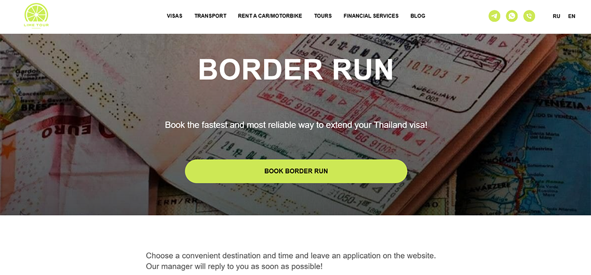
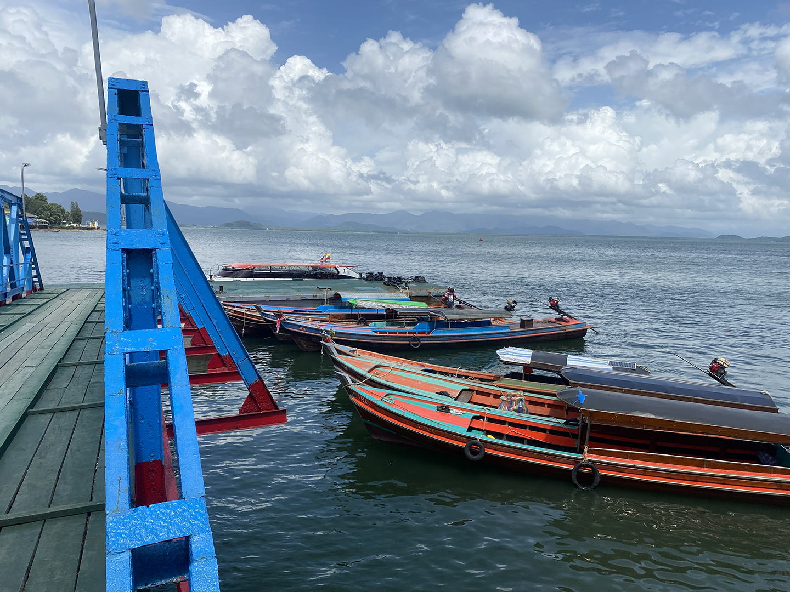

Visa Run: Thailand to Myanmar

Why Myanmar?
I was in Thailand on a tourist visa. As an American, as with many other nationalities, I received 60 days upon entry into the country. After your allotted time is up on your tourist visa, you have an opportunity to go to your local immigration office and get a 30 day extension.
In my case, I went to Blueport Mall where one of the two immigration offices in Hua Hin is located. I showed them proof that I was renting a hotel, filled out their form, and paid 2,000 baht (about 60 USD) and they stamped my passport, giving me another 30 days. My extension was set to expire on July 4th, 2025.
A few days before the expiration, I went back to the immigration office hoping they would be gracious enough to provide me an additional extension (getting a second or even a third extension is possible, but it is not the most likely). They rejected my request, so then I was faced with only one option: a visa run.
For those that are unaware, a visa run is when a foreigner traveling in or residing in another country must leave in order to “reset” their visa, so that they are able to stay longer in the country they are staying in. Typically, visa runs are done with the neighboring country and ideally are done as quickly as possible.
Most of the visa runs I’ve done were done in less than a day. I would simply go through the Thai border and exit the country. Then enter into the new country, wait in line for anywhere from fifteen minutes to an hour , get my stamp from their immigration officers, and finally head back across the border into Thailand.
When I went to the Thai immigration office and was denied a second extension, it was July 2nd and my visa expired on July 4th, so I only had 2 days to do a visa run.
I considered my options. There are four borders with which one can do a visa run from Thailand: Laos, Cambodia, Malaysia, and Myanmar.
I had already done Laos, Cambodia and Malaysia. I knew the process for each of them (how to get there, prices, what to expect, etc.). Now though, I was hundreds of miles away from those borders, not to mention Cambodia’s border had recently closed due to the territory dispute between them and Thailand. So the only option I had left was to go to Myanmar.
I had some trepidations about going to Myanmar. For one, the country has been steeped in a full scale civil war since 2021, with multiple rebel groups fighting for control of the country.
Also, there are countless news stories in Thailand about Thai or Chinese people being kidnapped in Myanmar and forced into slave labor, held for ransom, or worse.
Not only that, but also the US government has given Myanmar the highest risk score possible, which is “Level 4: Do Not Travel”. So, to say the least, I was a bit worried at the prospect of me having to go there.
But I was in a bit of a predicament. My visa was expiring in 2 days and Myanmar was the closest border to where I was living in Hua Hin. If I decided to go to Laos or Malaysia, it would have been a multi day journey and not to mention it would have been around double the cost.
Additionally, there was a part of me that was enchanted at the idea of going to this reportedly dangerous rarely traveled country. It appealed to my adventurous spirit. And, I wanted to check Myanmar off my list and get the passport stamp.
I had already done visa runs to all of Thailand’s neighboring countries, all but one. So, given all of this, I decided to set off for Myanmar.
Getting to Myanmar

I began doing my research on July 2nd, the evening after my visa extension attempt failed. Back when I was living in Si Racha, a medium-sized city on the coast about a 30-45 minute drive from Pattaya, I used to use a visa run agency.
These agencies will arrange the whole trip and facilitate the entire process for you. It’s very convenient, especially if it’s your first time doing a visa run to a particular country. It takes away a lot of stress, and if you purchase the services of a reputable agency it should be smooth sailing. From everything I’ve experienced they charge a fair price too. After consulting with some local farang ( “foreigner” in Thai) and reading reviews online, I settled on Lime Tour Hua Hin.
I honestly didn’t have many options, as I could only find a few agencies operating out of Hua Hin. Other than the positive reviews, the reason I picked Lime Tour was that they left the earliest compared to the others.
If I picked another agency, the next trip would have been next Tuesday, meaning I would have overstayed my visa by 4 days. The more days you overstay, the more hefty the fine. Thailand fines cost travelers 500 baht (about 15 USD) for each day you overstay and it caps at 20,000 baht (about 600 USD).
The most terrifying part about overstaying though, is that if you overstay for long enough it could affect your future in Thailand - visa rejections or even long travel bans.
Unfortunately for me, my visa was due to expire on Friday July 4th, but the earliest trip to the border wasn’t until Saturday July 5th. So, I was pretty much forced to bite the bullet and deal with the one day overstay. At first, I was quite concerned about the one day overstay and was considering getting on the first plane I could up north to Chiang Mai and taking the bus up to Laos.
But, I was put at ease by the local farang in Hua Hin, who all told me that there was nothing to worry about, that many had been in my same situation and were unaffected by it, except for the 500 baht fine of course.
So, on the morning of Saturday July 5th, (Lime Tour only does trips on Saturday and Wednesday) I got up bright and early at 6:30 am and got ready. I got a Grab and arrived at the meet up point in front of Tops, a popular supermarket chain in Thailand, at 7:15 am.
There were two vans parked and some people standing around them. When I approached, I noticed that everyone was speaking Russian and then I recalled on Lime Tour’s website they have “.ru” in their domain. The company owner and everyone doing the visa run was Russian or at least from a post-Soviet country, which was totally fine with me, because it meant I wouldn’t have to do any small talk.
I was looking forward to catching up on my sleep while in the van, since I barely got any sleep since I had a baby at home. I had already paid for the trip through a bank transfer the day before (the total for me was 7,500 baht and this is including the price of the 500 baht fine for my one day overstay), so they simply said hello and told which van I should enter. The van was quite comfortable, modern, and clean. I won’t go so far as to say it was luxurious, but some may argue it meets the criteria to be considered luxurious.
We set off at 7:30am and began the 5 hour journey south to Ranong. Not much can be said about the journey there. I slept for 3-4 hours.
The time I wasn’t sleeping I spent looking out the window at the scenery. This was quite enjoyable for me. We initially started on the highway, which is pretty standard and uninteresting if you are used to it.
When we got off of the main highway though, we began taking a winding road through the jungle, up and around mountains. The beauty of the Thai jungle always puts my mind at ease.
While driving through this rural area, closer to Ranong, I would occasionally see a house or a hut nestled into the jungle and I imagined what life would be like living there. Would it be peaceful and calm? Would it be dreadfully boring? These are the kinds of things I pondered, looking out the van window.
We arrived at our Thai border office at around 12:30pm. It was on the coast and across the inlet I could see Myanmar. It was pretty isolated, on this sparsely populated coast line with not many other buildings around.
On each side of the inlet, jungle covered mountains stretched as far as the eye could see. Rain clouds and mist creeped over the tops of the mountains, but thankfully where we were, around the inlet, the sun shined down. After we got out of the van, I found myself staring and getting lost in these mountains. They contained an ample amount of both beauty and mystery.

The general atmosphere of this Thai border crossing was chill, almost tranquil. There were two border officers and two boat employees there, and then our group of ten or so foreigners.
Around the parking lot and inside the office there were the iconic street dogs (“maa soi” in Thai) lounging about. We waited around for about 10 minutes, and then the boat employees gave us tickets for our ride across the inlet to Myanmar. After that we waited in line to see the border officer.
When it was my turn, I did the normal routine: gave him my passport, did a face and finger scan, and then got a stamp. I got the standard departure stamp, but since I overstayed one day I got a little stamp for that too. Even though I take pride in my passport and love getting new stamps, I would have preferred not to get one of those, but so be it.
Boat service ticket and visa documents with personal info censored
After finishing up with the Thai border officer, we made our way down the pier to where our boat was docked. As we waited, I strolled around the pier taking in the sights.
There were a mix of long tail boats (“ruea hang yao” in Thai) and what looked to be commercial fishing boats out on the open water. There weren’t many though, just a few passing by here and there. The long tail boats were transporting people back and forth across the inlet, and perhaps were being used for fishing too.
When I went into the waiting area at the end of the pier, I noticed an ornate wooden board with colored designs painted on it and with little discs on its surface. My hunch was that it was a board game. This was proven right later when I did some research and found it’s a popular board game amongst the common people of Southern Asia called Carrom. It’s basically a mix between billiards and shuffleboard, with a little bit of air hockey thrown in there.
After about 20 minutes, the captain of the boat finally appeared. We entered the boat, which was essentially a long speed boat, one by one and then set off for Kawthoung, the border town that would be our destination in Myanmar.
15 Minutes in Myanmar
The boat trip was a bit bumpy, but quite smooth overall. It took only 10 minutes or so before we began to slow down as we approached the Myanmar coast. As Kawthoung came into view clearer, I searched the view before me intently. Of course, I noticed the striking beauty of the nature surrounding the small border town, the sun hitting the water and the explosion of deep green flora covering the hilly terrain.
From this distance, the major thing I noticed though, is that it looked quite similar to Thailand in terms of the architecture of the buildings, the long tail boats, and all of the temples. I knew for certain I was in Myanmar though because a large sign in front of a temple read “Republic of the Union of Myanmar”.
In addition to the sign, the temple behind it also gave a clue that this was not Thailand. This can be easily overlooked, and the difference is not so obvious. Despite both countries practicing the Theravada Buddhist tradition, their temples are designed differently.
Thai temples have wide roofs that curve up, while Burmese (Myanmar) temples have multi tiered spires. So though Myanmar appeared to be very similar to Thailand in appearance, upon closer inspection the differences became evident.
Our boat docked, and we exited the boat single file, walking down the short pier to the Myanmar border office. We approached the main doors and what must have been some employee at the office opened the doors for us. The rest of our party shuffled inside, but I stopped.
A large sign produced by the Myanmar government displayed a warning in English and Mandarin, basically saying that tourists should not leave the border town and that if a tourist wanted to leave this designated area they needed to receive special permission from the proper authorities. This is not a typical sign one sees prominently displayed to greet them when they enter a country’s border.
This being the first sign a tourist sees, gives insight into the chaotic situation Myanmar is currently in. I was not surprised, as I already had some idea what was going on in Myanmar, but seeing this brought it into reality for me. This was my first time encountering a country or place where the government wasn’t in control.
We entered the office, and it looked pretty similar to other border offices I’d been to: an ordinary room with border officers sitting down in a box, looking at you through plexi glass. The Russians, so everyone else in our party, got in one line. Then me, the only American, went into my own line.
I went through the standard routine: face scan, finger print, handed the officer my passport, stamp, and done.
The only thing that stood out to me is that the border officers were not wearing any uniforms. I saw one uniform hung up on a coat hanger in the back. They were all just wearing a simple t-shirt. At all the other borders I’ve been to, the border officers wear uniforms. The Thai ones always wear this professional, kind of fancy, and militaristic uniform.
I believe this lack of uniforms reflects the ongoing chaos due to the civil war in Myanmar. In such turbulent times, maintaining strict protocols like requiring uniforms for officers can be challenging. Looking at the details, I could see that Myanmar was not like other countries I had been before.
Since I was the only one in my line, I finished in under a minute. So, I decided to take this opportunity to step out of the border office and into Kawthoung to see what kind of impressions I could get.
Immediately, after exiting the office and approaching the sidewalk I received a big smile and a wave from one of the local guys as he was riding down the street on his motorbike. He called out to me and said something along the lines of “hey”. I smiled and returned the greeting.
This was unique compared to my other border town experiences. For example, when I was in the Laotian border town, Houayxay, I didn’t receive a single smile from the locals. In fact, the locals looked visibly sad, a stark contrast to the smiling faces of the Thai people. So when I got this warm greeting from the Burmese man on his motor bike, I was both happy and surprised. It goes to show that even in reportedly dangerous countries, there are still friendly people.
After that quick interaction, I turned my head slightly and noticed old and slightly dilapidated buildings in front of me. They consisted of a few hotels, some local businesses, and the town houses that are typical in south eastern Asia (business on the first floor and then the families home on the 2nd or 3rd floor).
All looked a bit beaten up and aged. But it should be noted that you can see this kind of thing traveling around Thailand too. I’m not trying to make Myanmar seem worse than Thailand here. I’m just providing my observations.
I also saw your typical street vendors. One vendor had a wagon full of coconuts and he was chopping the tops off for the customers in line. Another interesting thing I noticed was a giant CCTV camera on top of the traffic light on the street in front of the border office.
They are extremely common back home in the US. I remember almost every traffic light had one. But, since living in Thailand I feel like I rarely see them. So, the fact that I saw one on the street in this border town in Myanmar stood out to me. Perhaps, since Kawthoung is one of the few places the government has control of, they have an increased focus on security.
There is one last thing I can mention from my brief time in Myanmar. As I was standing there soaking in the sites, a young boy of about 8 or 9 came out from around the corner, and approached me with an innocent smile. He then held out his hand and said ,“Money…money.” With a smile, I replied simply, “No money.” I had cash, but only 1000 baht bills and I was not prepared to depart with them as I needed them in case there was some kind of trouble I had to pay myself out of.
Right after I gave my reply to the boy, our boat driver came out and told me it was time to leave. I guess while I was outside lolly gagging, the rest of our party had already gone back to the boat. So I hurried back with him and we boarded the boat, heading back across the inlet to Thailand.
The interaction with the beggar boy in Myanmar gave me some kind of insight into the economic differences between Thailand and Myanmar. Let me explain. I have been approached by children asking me for money in Thailand as well.
But there is a crucial difference. These children in Thailand have always tried to sell me something, so one cannot really label them as beggars.
Now, I only spent 10-15 minutes in Myanmar and had one brief interaction with a child beggar. Therefore, my sample size is clearly limited, therefore I am making an assumption. So, let's assume that the majority of children asking for money in Myanmar are like the one I encountered. And, I know for sure based on all my time in Thailand and through dozens of interactions, that the children that approach me in Thailand have all tried to sell me something in exchange for money.
What does this difference in the ways that impoverished children in both countries show us?
Well, to me it's a reflection of their economic systems. Thailand is very much a free market capitalist country. They have embraced it almost fully. The private sector is thriving and it seems like everyone and their mother has a business in Thailand. So, it's like this system has trickled down to the impoverished children as well. They, and certainly their parents who most likely make them do it, choose to sell items to gain a profit, rather than begging for money with nothing to exchange.
On the other hand, Myanmar’s economy is heavily controlled by corrupt elites and the military who have control over all the key sectors. Private businesses do exist here, but it is on a much more limited scale compared to Thailand.
The ongoing civil war has severely disrupted the country's economy, resulting in widespread poverty among its citizens. Encountering a child begging served as a poignant reminder of the economic challenges many face in the region.
Getting Back and Would I Recommend It?

Once we got back to the Thailand side we docked the boat and then went back to our vans, setting off for Hua Hin. Before getting on the road we stopped by a restaurant in Ranong. Lunch was included in the cost of the trip. It was a classic Thai restaurant.
I sat at a table with two other guys from our group. They brought us out a variety of dishes: fried egg, stir fried vegetables, green curry, and white rice. It was delicious, pretty much perfect Thai food.
The guys at my table did not utter a single word and nor did I, as they were Russian speakers and did not seem to speak English well.
I was happy to be a loner though. Between work and family, I am typically very busy everyday, talking nonstop with people. So, I used this trip as an opportunity, not only to get my visa renewed, but also for rest and rejuvenation. After eating our meal we hopped back in the vans and made the 5 hour journey back to Hua Hin. The entire way back, I either stared out the window or slept.
So, would I recommend this visa run to other foreigners hoping to extend their stay in Thailand?
The answer is most definitely, yes.
Thankfully, all of my visa runs have gone pretty smoothly for the most part. This one was no exception. Though it was a little more expensive than the previous visa run service I had used from Pattaya to the Cambodian border, it was nothing crazy. To be precise, it was 2500 baht or 78 USD more expensive.
Despite the “Do Not Travel” rating from the US government and the dangerous reputation of Myanmar, Lime Tour got us there and back safely. There were no obstacles or anything close to a dangerous situation. It’s true that nobody wants to do a visa run, in fact many people dread it because it is inconvenient and you have to spend money.
But, I actually enjoyed the trip. For one, I got to catch up on sleep while in the van for a total of 10 hours. This was especially beneficial for me, as I typically only get 5-6 hours of sleep a night. I was thankful for this aspect of the trip.
Additionally, I got to travel to a new part of Thailand I had never gone to and I got to have a chance to experience Myanmar. Overall, I had no complaints.
If you have any questions or comments regarding visa runs feel free to reach out to us: fareastexplorers@gmail.com